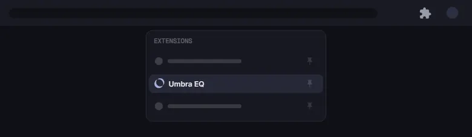

An equalizer for every tab. Boost the bass, tame harsh highs, or make a quiet video louder — all on your computer.
Chrome hides new extensions behind the puzzle icon in the toolbar. Pin Umbra EQ once and it stays in reach.

Click the puzzle icon at the top-right of Chrome.
Find Umbra EQ in the list and click its pin.
On any tab with sound, click Umbra and press EQ This Tab.
Everything happens on your computer. Umbra never records your audio or sends it anywhere, and there is no account to sign up for.